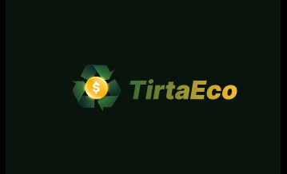
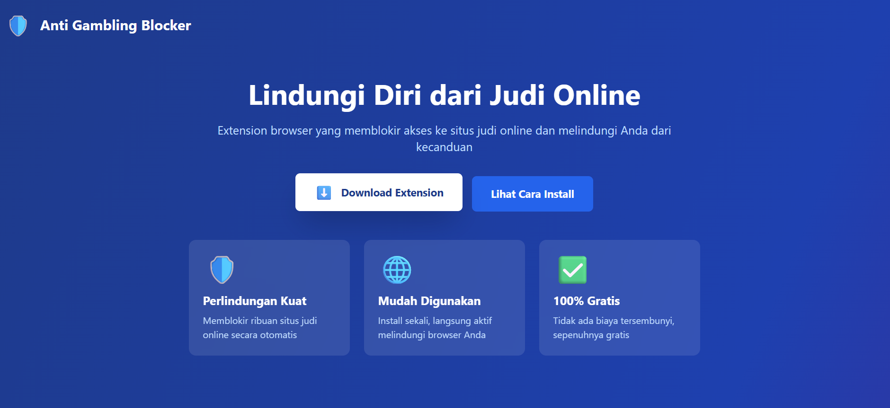

ELIJAH
MAVERICK
Mahasiswa Informatika dengan ketertarikan kuat di bidang desain antarmuka dan pengalaman pengguna.

🎨 UI Design
🔬 User Research
⚡ Prototyping
Mahasiswa Informatika dengan ketertarikan kuat di bidang desain antarmuka dan pengalaman pengguna.

Saya adalah mahasiswa Informatika di Universitas Udayana yang memiliki ketertarikan mendalam pada desain UI/UX. Bagi saya, desain bukan sekadar tentang tampilan yang indah, tetapi tentang bagaimana sebuah produk dapat dirasakan dan digunakan secara alami oleh penggunanya.
Saya tertarik pada bidang ini karena visual adalah hal yang paling mudah membuat orang lain terpikat pada suatu hal. Karena itu, saya mulai mempelajari prinsip-prinsip desain, melakukan riset pengguna, dan membangun prototipe.
Tiga area utama yang saya kembangkan.
Saya memiliki ketertarikan dalam memahami kebutuhan dan perilaku pengguna melalui proses riset yang terstruktur. Mulai dari wawancara pengguna, usability testing, hingga analisis pain point — saya percaya desain yang baik berakar dari empati dan pemahaman mendalam terhadap manusia.
Saya senang merancang antarmuka yang tidak hanya estetis tetapi juga fungsional dan konsisten. Melalui eksplorasi tipografi, warna, layout, dan komponen desain, saya berusaha menciptakan visual yang memberi kesan positif dan mempermudah interaksi pengguna dengan produk.
Saya memahami pentingnya memvalidasi ide desain sebelum dikembangkan. Saya terbiasa membuat prototype interaktif dari wireframe hingga high-fidelity mockup, lalu mengujinya kepada pengguna untuk mendapatkan feedback nyata yang digunakan untuk iterasi desain lebih lanjut.
Kumpulan proyek yang saya buat dalam memahami prinsip-prinsip UI/UX design.


